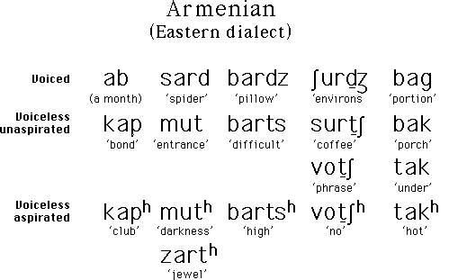
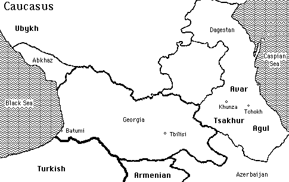

Armenian is an Indo-European language with approximately 5 million speakers. Eastern Armenian is spoken in Armenia, northern Iran, and Turkey.
Eastern Armenian has a three-way contrast between voiced, voiceless unaspirated, and voiceless aspirated stops and affricates. While this contrast occurs in many languages, it is unusual for it to be maintained in word-final position, as is the case in Eastern Armenian.
